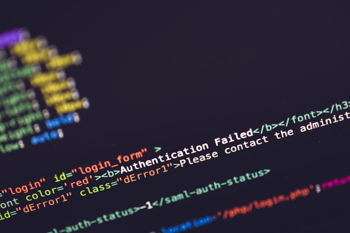

Information Gathering
Information gathering is an important skill to be known,
Its gonna help a fresher to get information about the diffrent
coding languages which are available,it will also help to find
out the similarities among diffrent languages.Utilizing the
information collected is also an skill to be known, as it plays
a key-roll in information gathering.

Try to gather as many free resources as possible.